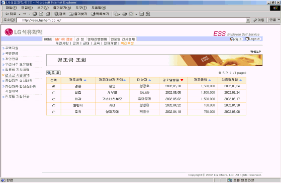
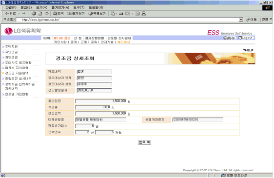

Ⅰ. 개요
1. 개요
경조금 조회는 개인이 ESS상에서 현재까지 신청하여 경조금 지원을 받은 내역을 조회하는 화면이다.
Ⅱ. 화면사용법 및 유의사항
<그림 1. 경조금 지원내역 목록 화면>

1) 경조금을 지원 받은 항목을 선택하여 조회버튼을 누르면 경조금을 지원 받은 상세 내역을 조회할 수
있다.
<그림 2. 경조금 지원내역 상세조회 화면>

1) 이체은행명과 은행계좌번호는 자금부서에서 관리하는 복리후생 계좌임.